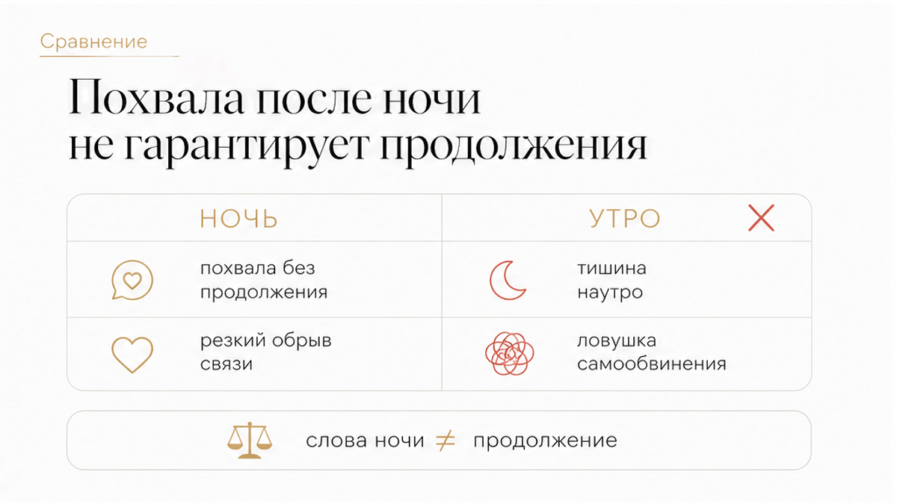
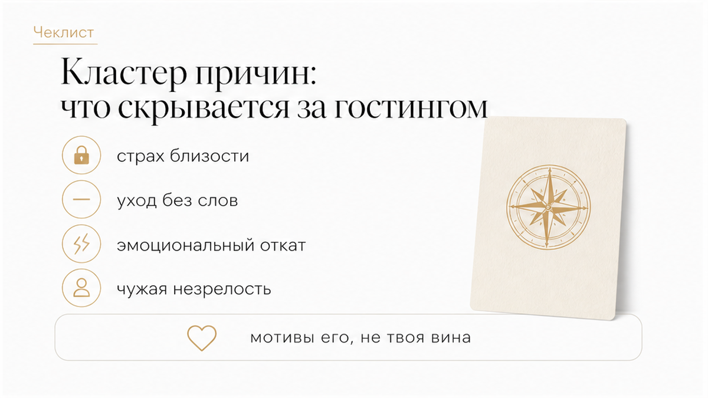
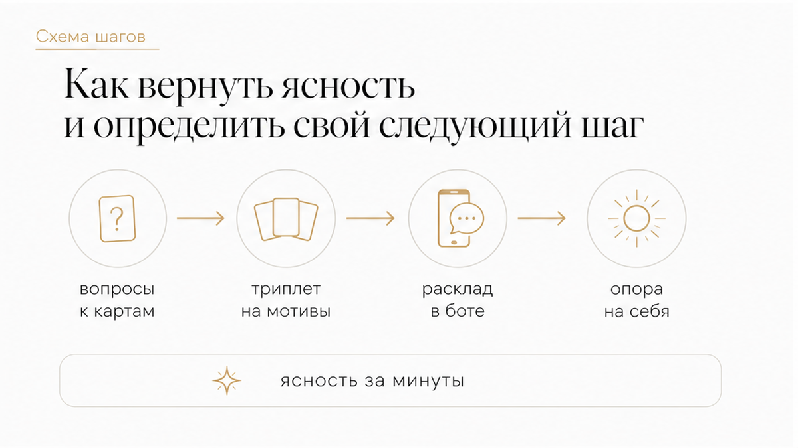

Ты просыпаешься, берёшь телефон, а в диалоге висит твоё утреннее сообщение без ответа. Ещё несколько часов назад он обнимал тебя, говорил, как ему было хорошо, и строил планы на выходные. Сейчас на часах полдень, в переписке глухая тишина, а внутри начинает нарастать липкая тревога.
Внезапное молчание после физической открытости бьёт наотмашь. В голове мгновенно запускается поиск собственных ошибок: «Я сказала лишнее? Была неловкой? Слишком быстро согласилась?» Хочется поминутно перебрать каждую деталь ночи. Однако резкий обрыв связи после близости почти всегда раскрывает внутреннее устройство ушедшего мужчины, а не твою ценность.
Когда партнёр бесследно растворяется сразу после постели — это классический гостинг. Чаще всего за ним стоят страх настоящей уязвимости, потребительское отношение или элементарный инфантилизм, когда у человека нет смелости завершить контакт словами. Самобичевание в этой точке — главная ловушка.
Чтобы перестать крутить в мыслях чужие мотивы и вернуть себе внутреннюю опору, картам можно задать 2–3 практических вопроса:
Разложи карты на ситуацию за пару минут — открой 3 бесплатных расклада в боте (выбирай экспресс-триплет или подробный кельтский крест на отношения). Если качели затянулись и нужно увидеть скрытую динамику отношений целиком, открой расклад «Суть – Тень – Вектор» с аудиоразбором связок карт в приложении во ВКонтакте или в приложении Макс.

Самый болезненный момент — резкий контраст между ночью и последующим утром. Мужчина может искренне восхищаться свиданием, говорить нежные слова и горячо обсуждать следующую встречу, а через сутки пропасть без следа. Женские форумы переполнены такими историями: яркие эмоции и похвала в моменте не означают, что человек готов оставаться в отношениях.
Психотерапевт Елена Антонова подчеркивает: первая автоматическая мысль женщины после такого ухода — «со мной или с сексом было что-то не так». В реальности пылкие слова на пике эмоционального подъема часто отражают лишь сиюминутный импульс. Когда гормональный всплеск спадает, включаются привычные защитные паттерны. Если мужчина не умеет выстраивать долгосрочную связь, он выбирает самый лёгкий для себя путь — исчезнуть без объяснений.
Семейный психолог Татьяна Аникеева объясняет, что обрыв контакта после физической близости переживается психикой как двойной удар. В момент интимности обнажаются телесная и эмоциональная уязвимость, которые активируют базовую систему привязанности. Резкий разрыв этого контакта воспринимается нервной системой как прямая угроза безопасности.
Психофизиологические исследования подтверждают: внезапное социальное отвержение задействует те же мозговые центры, что и реальная физическая боль. Психолог Рената Савилова отмечает, что после близости высокий уровень окситоцина, отвечающего за доверие и единение, при резком стрессе моментально сменяется мощным выбросом кортизола. Именно поэтому разбитое сердце ощущается на уровне физического тела: сдавливанием в груди, бессонницей и изматывающей фоновой тревогой.

Специалисты выделяют несколько типичных механизмов, толкающих человека на исчезновение после сближения. Это не диагнозы конкретному мужчине, а распространённые психологические паттерны:
Помни главное: ни одна из этих причин не оправдывает внезапный уход и не перекладывает ответственность на того, кого оставили в тишине.
Клинический психолог Дарья Сальникова напоминает: самая разрушительная ошибка при гостинге — пытаться заглянуть в чужую голову и бесконечно искать скрытые смыслы. Даже если попытаться вывести ушедшего на прямой разговор, высок риск получить дежурные отговорки или новую мучительную паузу.
Первый шаг к облегчению — перевести фокус внимания с его мотивов на собственное самочувствие. Ответственность за исчезновение целиком лежит на том, кто выбрал такой способ ухода. Единственный вопрос, имеющий значение прямо сейчас: насколько тебе комфортно находиться в подвешенном состоянии и стоит ли удерживать открытой дверь для человека, который выходит из контакта без слов.

Когда логические объяснения исчерпаны, а навязчивый внутренний диалог не прекращается, важно сместить фокус с бесконечного анализа прошлого на понимание текущей позиции. Язык карт помогает счистить иллюзии и увидеть объективную расстановку сил без самообмана.
Расставь точки над «i» и верни себе контроль над ситуацией: